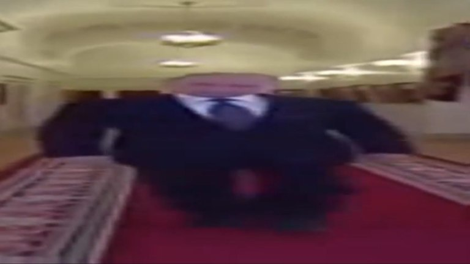

Wide Putin(Широкий Путин)
Широкий Путин (Wide Putin, Thicc Putin walking, It’s him) – мем, в котором растянутый Владимир Путин идет по коридору. Искаженный отрывок под музыку Song For Denise вставляют в самые разные видео.
Растянутые и искаженные картинки с президентом России были популярными еще в 2017 году. Тогда по рунету ходил мем “Блэд Нэвэльный” – один из первых крупных постироничных мемов.